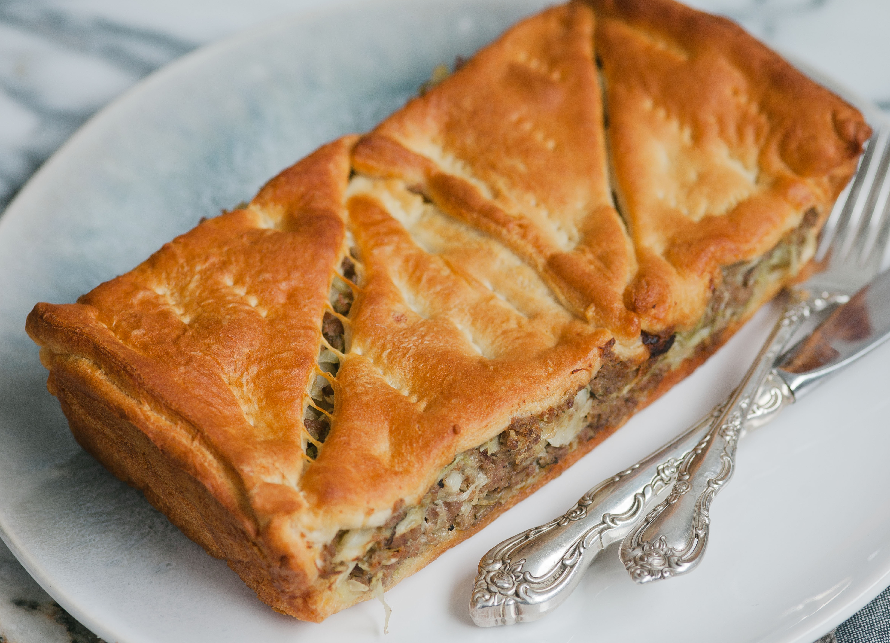

Easy Runza Casserole

Description
This runza casserole recipe is an easy, cheesy version of the great-tasting runza pocket sandwich.
Ingredients
- 2 tablespoons butter
- 1 pound lean ground beef
- 1/2 cup chopped onion
- 1 teaspoon salt
- 1/4 teaspoon ground black pepper
- 1/8 teaspoon garlic powder
- 2 cups chopped cabbage
- 1 (10 ounce) can low-sodium cream of mushroom soup
- 2 (8 ounce) packages refrigerated crescent rolls
- 1 cup shredded Cheddar cheese
- 1 cup shredded mozzarella cheese
Steps
- Preheat the oven to 350 degrees F (175 degrees C).
- Melt butter in a deep skillet over medium heat. Cook and stir ground beef until browned, about 5 minutes.
- Add onion, salt, pepper, and garlic powder to the skillet; cook until onion softens, 3 to 5 minutes. Add
cabbage and cook until tender, about 5 minutes. Stir mushroom soup into the skillet.
- Open crescent roll packages and unroll dough. Press 8 pieces into the bottom of a 9x13-inch baking dish.
Pour beef mixture on top. Cover with Cheddar and mozzarella cheeses. Place remaining 8 pieces dough on top.
- Bake in the preheated oven until top is golden brown and filling is bubbling, 20 to 30 minutes.